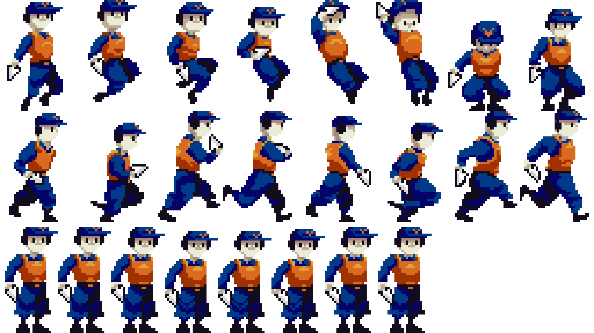
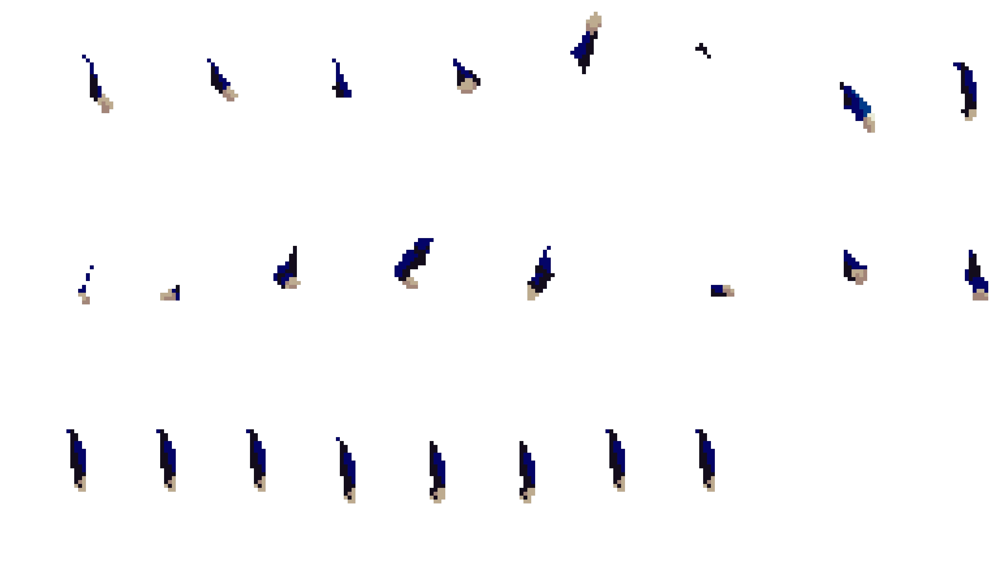
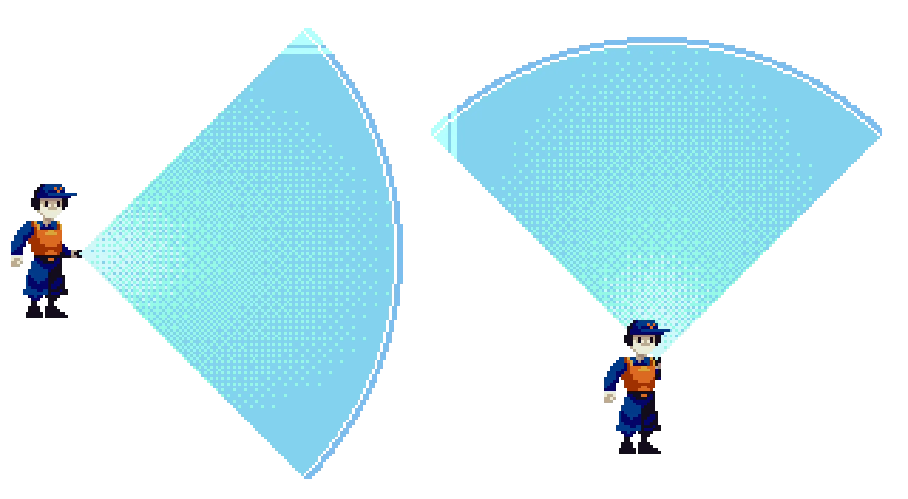

CTRL-V
Shortcuts are your keys to victory!
- Role
- Level Designer, Animator, Programmer
- Team
- 4 Developers, 1 Artist, 1 Composer
- Duration
- 5 Months
- Engine
- Unity
Gallery


Overview
CTRL-V is a 2D side-scrolling platformer where you enter the digital world of a corrupted computer through a newly installed antivirus program. Copy, cut, paste and undo objects to manipulate your surroundings, overcome threats, and restore stability to the system.
This project was completed in my second year of college for the course Video Game Design and Programming. I was assigned to work on the project as a systems designer, I was responsible for the development and conceptualization of some of the core movement mechanics across the levels, such as fans to push the player and increase their speed, and the rope swinging mechanics. But as development progressed, I also had to take on the artistic role of Animator for the main character, UI design, tutorial and level designer.
Swinging on a rope
Two were the main challenges I was presented when tackling this mechanic: The first was to create a rope object with properties that could be changed on the fly depending on the needs of the level, since those were not built at this point in development. For this, I created a rope prefab with a script that would link together the number of segments chosen by the designer using hinge joints at runtime, meaning that the designer could also adjust the strenght of each joint to change the flexibility and swinging speed. An additional advantage of this approach, was that since each segment was a separate object, I could pool the sprites and randomly choose one for each segment, giving the rope a more organic and less repetitive look.
The second issue was providing seemless interaction between the player and the rope: maintaining the player's momentum when jumping on the rope, and making moving up and down the segments a smooth translation. For the latter I made the sprite's movement interpolate between the mid-segments of the rope, and for the former I kept the momentum of the player and added a boost at the moment of release, on top of adding a short delay before the player could grab the rope again, to preventthe player from swinging back and forth on the same rope.
Animations
Making the animations for the main character when I had never attempted a running cycle before this project was most definitely a terrifying challenge, but with the right research and practice it was I was able to accomplish within a relatively short timeframe!

As you may be able to tell, none of the animations present the character's left arm!, which was animated separately and then placed behind the player's sprite.

The reason for this, is because throughout the game, the left arm is the one holding the 'scanner', which is used to copy and paste objects in the scenes. This wouldn't have been an issue, if not for the fact that the scanner can point above and below the player, meaning I'd need a specific scanner sprite I could rotate for the cardinal directions, that would still be cohesive with all the other animations.
